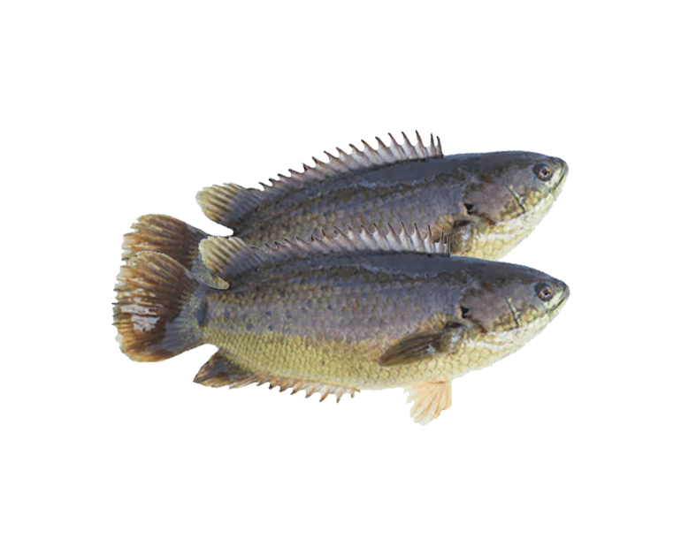

কৈ মাছের চাষ ব্যবস্থাপনা
ভূমিকা:অবহমানকাল হতে বাংলাদেশে কৈ মাছ অত্যন্ত জনপ্রিয় হিসেবে পরিচিত । এসব মাছ খেতে সুস্বাদু এবং পুষ্টিকর । সূদূর অতীতে এ মাছগুলো প্রাকৃতিকভাবেই আমাদের জলাশয়ে প্রচুর পাওয়া যেত । কৃত্তিম প্রজনন ও চাষ প্রযুক্তি উদ্ভাবন এবং চাহিদা ও বাজারদর বেশি হওয়ায় মাছের বাণিজ্যিক চাষ সম্প্রসারিত হচ্ছে।
পুকুর নির্বাচন : বাণিজ্যিক মাছচাষের জন্য অপেক্ষাকৃত বড় আকারের পুকুর, ৪০ শতাংশ বা তদূর্ধ হওয়া বাঞ্ছনীয়। পানির গভীরতা ৪ থেকে ৬ ফুটের মধ্যে হলে ভাল হয়। মাটি দোআঁশ বা এঁটেল দোআঁশ এবং পুকুরটি আয়তাকার হওয়া উত্তম।
পুকুর প্রস্তুতি

* পাড় ও তলদেশ: পাড়ে ঝোপ-ঝাড় থাকলে পরিষ্কার করতে হবে। পানিতে যথেষ্ট পরিমাণে (কমপক্ষে দৈনিক ৮ ঘন্টা) সূর্যালোক প্রবেশের সুবিধার্থে সম্ভব হলে বড় গাছ কেটে ফেলতে হবে। সম্ভব না হলে অন্তত ভেতর দিকের ডাল-পালা কেটে ফেলতে হবে প্রয়োজনে পানি নিষ্কাশন করে পুকুরের পাড় মেরামত ও তলদেশ অতিরিক্ত কর্মমুক্ত করে সমান করতে হবে। অন্যথায় পুকুরের পানির গুণাগুণ দ্রুত খারাপ হয়ে যাবে। তাছাড়া, তলদেশ সমান না হলে পরবর্তীতে মাছ আহরণ করা কঠিন হবে।
* জলজ আগাছা ও অবাঞ্চিত মাছসহ রাক্ষুসে মাছ দুরীকরণ: যদি পানি প্রাপ্তি বিশেষ সমস্যা না হয় তাহলে পুকুরের পানি নিষ্কাশন করে সব জলজ আগাছা এবং অবাঞ্চিত মাছসহ রাক্ষুসে মাছ অপসারণ করা যেতে পারে। পানি প্রাপ্তি সমস্যা হলে, প্রথমে পুকুরে বারবার জাল টেনে যতদূর সম্ভব সকল মাছ ধরে ফেলতে হবে। এরপর অবশিষ্ট সব মাছ ধরে ফেলার জন্য প্রতিশতক আয়তন ও প্রতিফুট পানির গড় গভীরতার জন্য ২৫-৩০ গ্রাম হারে রোটেনন প্রয়োগ করতে হবে। উদাহরণস্বরূপ, ৪ ফুট পানির গড় গভীরতার এক একর পুকুরে ১০-১২ কেজি রোটেনন লাগবে।
* চুন প্রয়োগ: রোটেনন প্রয়োগ করা হয়ে থাকলে প্রয়োগর ৬/৭ দিন পর প্রতি শতকে ১ কেজি হারে চুন প্রয়োগ করতে হবে। এই হারে এক একর জলায়তন বিশিষ্ট পুকুরের জন্য চুন লাগবে ১০০ কেজি।
কৈ চাষের সুবিধাসমূহ :
■ কৈ সুস্বাদু, পুষ্টিকর মাছ।
■ অসুস্থ ও রোগমুক্তির পর স্বাস্থ্যের উন্নতির জন্য এগুলো সমাদৃত মাছ।
■ অতিরিক্ত শ্বাস অঙ্গ থাকায় এর বাতাস থেকে অক্সিজেন নিয়ে দীর্ঘ সময় ডাঙ্গায় বেঁচে থাকতে পারে।
■ মাসের মধ্যে বিক্রয়যোগ্য হয়, ফলে একই জলাশয়ে বছরে ৩-৪ বার চাষ করা সম্ভব (সঠিক নার্সারি ব্যবস্থাপনার মাধ্যমে)।
■ তুলনায় চাহিদা ও বাজার মূল্য অত্যাধিক বেশি হওয়ায় এ মাছগুলাের বাণিজ্যিক চাষ দিন দিন বাড়ছে।
আন্তর্জাতিক বাজারেও ব্যাপক চাহিদা আছে।
কৈ মাছের নার্সারি ও চাষ ব্যবস্থাপনা
পুকুর নির্বাচন ও প্রস্তুতি
■ নার্সারি পুকুরের আয়তন ১০-৫০ শতাংশ এবং গভীরতা ১.০-১.৫ মিটার।
■ পুকুর হতে অনাকাক্ষিত মাছ ও প্রাণী দূর করা উত্তম; তবে পুকুর শুকানো সম্ভব না হলে প্রতি শতাংশে ১ ফুট পানির গভীরতায় ২৫-৩০ গ্রাম রোটেনন প্রয়োগ করতে হবে।
■ রোটেনন প্রয়োগের ৬-৭ দিন পর প্রতি শতাংশে ১.০ কেজি হারে চুন পুকুরে প্রয়োগ করতে হবে।
■ চুন প্রয়োগের ২-৩ দিন পর শতাংশ প্রতি ৫০০ গ্রাম সরিষার খৈল, ১৫০-২০০ গ্রাম ইউরিয়া ও ৭৫-১০০ গ্রাম টিএসপি প্রয়োগ করতে হবে।
■ ইউরিয়া সার পানিতে গুলে ছিটিয়ে এবং টিএসপি ও সরিষার খৈল ১২ ঘন্টা পানিতে ভিজিয়ে রাখার পর পানিতে গুলে সমস্ত পুকুরে সমানভাবে ছিটিয়ে দিতে হবে।
■ সার প্রয়োগের ৫-৬ দিন পর পুকুরের পানিতে প্রাকৃতিক খাদ্য তৈরি হলে পুকুরে পোনা ছাড়তে হবে।
■ নার্সারি পুকুরের চারপাশে ৩-৪ ফুট উঁচু মশারীর জালের বেষ্টনী দিতে হবে। এর ফলে ব্যাঙ ও সাপ পুকুরে প্রবেশ করে পোনার ক্ষতি সাধন করতে পারবে না।
■ হাঁসপোকা ও ক্ষতিকারক প্লাংকটন বিনষ্ট করার জন্য রেণু পোনা মজুদের ২৪ ঘন্টা আগে ৮-১০ মিলি সুমিথিয়ন প্রতি শতাংশে অবশ্যই প্রয়োগ করতে হবে।
ধানী পোনা মজুদ
■ নার্সারি পুকুরে ১৫-২০ দিন বয়সের ধানী পোনা প্রতি শতাংশে ৫,০০০-৬,০০০ টি হারে মজুদ করা যেতে পারে।
পুকুর নির্বাচন ও প্রস্তুতি
■ কৈ মাছ চাষের জন্য পুকুর নির্বাচন গুরুত্বপূর্ণ বিষয়। এ মাছ চাষের জন্য ৪-৬ মাস পানি থাকে এ রকম ১৫-৫০ শতাংশের পুকুর নির্বাচন করতে হবে। তবে এর চেয়ে বড় পুকুরেও এ মাছ চাষ করা যায়।
■ পুকুরের পাড় মেরামত ও জলজ আগাছা পরিষ্কার করতে হবে।
■ পুকুর সেচে পানি শুকিয়ে অনাকাক্ষিত মাছ ও প্রাণী দূর করতে হবে।
■ পুকুর শুকানো সম্ভব না হলে প্রতি শতাংশে ২৫-৩০ গ্রাম রোটেনন (১ ফুট গভীরতার জন্য) প্রয়োগ করে অনাকাক্ষিত মাছ দূর করতে হবে ।
■ প্রতি শতংশে ১ কেজি হারে চুন প্রয়োগ আবশ্যক।
■ চুন প্রয়োগের ২-৩ দিন পরে পূর্বের নিয়মে সার প্রয়োগ করতে হবে। পোনা মজুদের পূর্বে পুকুরের চারিদিকে নাইলন/নেট জালের বেষ্টনী দিতে হবে।
■ সার প্রয়োগের ৬-৭ দিন পরে পুকুরে পোনা মজুদ করতে হবে।
পোনা সংগ্রহ ও মজুদ
■ পুকুরে চাষের জন্য কৈ মাছের পোনা নিকটবর্তী ভাল হ্যাচারি হতে সংগ্রহ করে পলিথিন ব্যাগে অক্সিজেন দিয়ে পরিবহন করতে হবে।
■ প্রতি শতাংশে ০.৫-১.০ গ্রাম ওজনে সুস্থ সবল ৩০০-৪০০ টি পোনা মজুদ করতে হবে। তবে উন্নত ব্যবস্থাপনায় অধিক ঘনত্বে পোনা মজুদ করা যেতে পারে।
■ পোনা মজুদের সময় পোনাকে পুকুরের পানির সাথে ভালভাবে কন্ডিশনিং করে তারপর ছাড়তে হবে।
খাবার ব্যবস্থাপনা ও পরিচর্যা
পোনা মজুদের দিন থেকে ৩৫-৪০% আমিষ সমৃদ্ধ পিলেট খাদ্য নিম্নের ছক অনুযায়ী সকাল, দুপুর ও বিকালে পুকুরে ছিটিয়ে সরবরাহ করতে হবে।
| কৈ মাছের খাদ্য প্রয়োগের তালিকা (প্রতি শতাংশে) |
|---|
| দিন | দৈহিক ওজন (গ্রাম) | খাদ্য প্রয়ােগের হার (%) | প্রতি দিনের খাদ্য (গ্রাম) |
|---|---|---|---|
| ১-৯ | ১ | ২০ | ৬০ |
| ১০-১৯ | ৪ | ১৫ | ১৬২ |
| ২০-২৯ | ৭ | ১২ | ২২৭ |
| ৩০-৩৯ | ১২ | ১০ | ৩২৪ |
| ৪০-৪৯ | ২০ | ৮ | ৪৩২ |
| ৫০-৫৯ | ২৮ | ৭ | ৫৩০ |
| ৬০-৬৯ | ৩৮ | ৬ | ৬১৬ |
| ৭০-৭৯ | ৫২ | ৫ | ৭০২ |
| ৮০-৮৯ | ৬৫ | ৪.৫ | ৭১৯ |
| ৯০-৯৯ | ৮০ | ৪ | ৮৬৪ |
| ১০০-১২০ | ১০০ | ৩.৫ | ৯৪৫ |
এছাড়াও স্থানীয়ভাবে উপকরণ সংগ্রহ করে খাদ্য তৈরি করেও পুকুরে প্রয়োগ করা যেতে পারে।
প্রতি ১০-১৫ দিন পর পর জাল টেনে মাছের বৃদ্ধি পর্যবেক্ষণ করে খাবারের পরিমাণ নির্ধারণ করতে হবে।
পোনা মজুদের পর ৩০ দিন অন্তর অন্তর শতাংশ প্রতি ২০০ গ্রাম চুন প্রয়োগ করতে হবে।
কৈ মাছের পুকুরে প্রচুর প্লাংকটনের অধিক্য পরিলক্ষিত হয়ে থাকে, এই প্লাংকটন নিয়ন্ত্রণের জন্যে প্রতি শতাংশে মনোসেক্স তেলাপিয়ার পোনা ১২ টি ও সিলভার কার্পের পোনা ৪ টি মজুদ করা যেতে পারে ।
প্রয়োজন মোতাবেক পুকুরে বাহির হতে বিশুদ্ধ পানি সরবরাহ করার ব্যবস্থা নিতে হবে।
শীতকালীন সতর্কতা
সাধারনত শীতকালে থাই কৈ মাছে ক্ষতরোগ দেখা দেয়। এজন্য শীতের পূর্বেই যথাসম্ভব থাই কৈ মাছের বাজারজাত করা ভাল। তবে পুকুরে যদি বাজারজাতকরণের অনুপযোগী মাছ থাকে তবে শীতকালে অবশ্যই নিম্নোক্ত ব্যবস্থা গ্রহণ করা উচিত।
পুকুরে গভীর নলকূপের পানি সরবরাহ করতে হবে।
প্রতি মাসে শতাংশ প্রতি ২০০-৩০০ গ্রাম হারে চুন প্রয়োগ করা যেতে পারে ।
কৈ মাছের রোগ বালাই
পানির গুণাগুণ মাছ চাষের উপযোগী না থাকলে কৈ মাছ সহজেই রোগাত্রান্ত হয়। রোগবালাই এ মাছের ক্ষেত্রে একটি বিরাট অন্তরায়। পুকুরে সংক্রামক রোগবালাই এর আক্রমণ হলে মাছের উৎপাদন লক্ষ্যমাত্রায় পৌছানো সম্ভব হয় না। ফলে, চাষিরা ব্যাপক ক্ষতির সম্মুখীন হয়।
রোগ প্রতিরোধ
সঠিক ঘনত্বে মাছ চাষ করতে হবে।
মাঝে মাঝে হররা টেনে দিতে হবে।
পরিমিত পরিমাণ সম্পূরক খাদ্য প্রয়োগ করতে হবে।
পিএইচ উপযোগী মাত্রায় রাখার জন্য প্রতি শতাংশে ১৫০-২০০ গ্রাম চুন/জিওলাইট প্রয়োগ করতে হবে।
প্রতিকার বা চিকিৎসা
অধিক আক্রান্ত মাছ পুকুর থেকে উঠিয়ে ফেলতে হবে।
প্রতি শতাংশে ১০ গ্রাম হারে পুকুরে পটাশিয়াম পারম্যাঙ্গানেট প্রয়োগ করতে হবে।
প্রতি কেজি মাছের দেহ ওজনের জন্য ৫০ মিলিগ্রাম টেট্রাসাইক্লিন খাবারের সাথে মিশিয়ে ৭ দিন খাওয়াতে হবে।
প্রতি শতাংশে ২০০-৩০০ গ্রাম লবণ পুকুরে ছিটিয়ে দিতে হবে।
মাছ আহরণ ও উৎপাদন
উল্লেখিত পদ্ধতিতে কৈ মাছ চাষ করলে ৪-৫ মাসের মধ্যে ১০০-১৫০ গ্রাম ওজনের হবে। এ সময় জাল টেনে ও পুকুরের সমস্ত পানি শুকিয়ে মাছ ধরার ব্যবস্থা নিতে হবে। আধুনিক চাষ ব্যবস্থাপনায় প্রতি ১০০ শতাংশে ৩,০০০-৩,৫০০ কেজি মাছ উৎপাদন করা যায়।
চাষের পুকুরে খাদ্য ব্যবস্থাপনা
■ দৈনিক দু'বার মাছের দেহের ওজনের ৫-৬% হারে খাবার দিতে হবে।
■ খাবার হিসেবে ফিসমিল ৩৫%, মিহি কুড়া ২০%, গমের ভূষি ১৫%, সরিষার খৈল ২৫%, চিটাগুড় ৫% বাইন্ডার হিসেবে ও ভিটামিন ০.১% একত্রে মিশিয়ে বল আকারে দেয়া যেতে পারে।
■ কৈ মাছের চাষ পদ্ধতি সঠিকভাবে অনুসরণ করা হলে ৬-৭ মাসে বাজারজাতকরণের উপযোগী হয়। এ সময় কৈ মাছের গড় ওজন ৩০০-৪০০ গ্রাম ।
| খাদ্য উপাদান | পরিমাণ(কেজি) |
|---|---|
| চালের কুড়া/গমের ভুশি | ৪৯.৫০ |
| সরিষার/তিলের খৈল | ২০.০০ |
| ফিশমিল/প্রোটিন কনসেনট্রেটি | ২০.০০ |
| আটা | ৫.০০ |
| চিটাগুড় | ৫.০০ |
| ভিটামিন ও খনিজ | ০.৫০ |
| মোট | ১০০.০০ |
ঝুঁকি ব্যবস্থাপনায় করণীয়
* সংরক্ষিত পিলেট খাদ্য এক মাসের মধ্যে ব্যবহার করে ফেলা উচিৎ। তবে খাদ্যে এন্টি ফাংগাল এজেন্ট/এন্টি-অক্সিডেন্ট ব্যবহার করলে উপযুক্ত পরিবেশে তা ৩-৪ মাস পর্যন্ত সংরক্ষণ করা যায়।
* পোনা মজুদের পর প্রতিদিন সকাল-বিকাল মাছের গতিবিধি পর্যবেক্ষণ করতে হবে। মেঘলা দিনে বিশেষভাবে সতর্ক থাকতে হবে।
* পুকুরের পানি কমে গেলে ভাল উৎস হতে পানি সরবরাহ করতে হবে। অতিরিক্ত বৃষ্টির কারণে পুকুরের পানি বেড়ে গিয়ে উপচে পড়ার সম্ভাবনা সৃষ্টি হলে পানি বের করে দিতে হবে।
* সেকি ডিস্কে পানির স্বচ্ছতা ৮ সেন্টিমিটারের নীচে নেমে গেলে খাবার দেয়া বন্ধ থাকবে।
* পানিতে অক্সিজেনের অভাবে মাছ পানির উপরের স্তরে উঠে খাবি খেতে থাকে। এই অবস্থায় পানিতে ঢেউ সৃষ্টি করে/প্যাডেল হুইল বা এ্যারেটর ব্যবহার করে বা অন্য কোন উপায়ে পানিতে অক্সিজেনের পরিমাণ বাড়াতে হবে।
*পুকুরের তলায় যাতে বিষাক্ত গ্যাস জমতে না পারে সেজন্য মাঝে মাঝে হররা টানতে হবে।
* জাল টেনে মাঝে মাঝে মাছের স্বাস্থ্য পরীক্ষা করতে হবে।
* বিক্রির উপযোগী মাছ ধরে ফেলতে হবে যেন অপেক্ষাকৃত ছোট মাইগুলো বড় হওয়ার সুযোগ পায়।
* ফেব্রুয়ারী-মার্চে মজুদ করে ডিসেম্বরের মধ্যেই সব মাছ ধরে ফেলতে হবে।
* বাজার চাহিদার ভিত্তিতে নির্দিষ্ট দিনক্ষণ ঠিক করা প্রয়োজন।
* ভোর বেলায় মাছ ধরতে হবে।
উৎপাদন
বর্ণিত পদ্ধতিতে একর প্রতি মাছের উৎপাদন ৪-৫ টন পাওয়া সম্ভব।
সম্ভাব্য উৎপাদন ব্যয়, আয় ও মুনাফা (এলাকাভেদে ইজারা মূল্য ও উপকরণ মূল্যের পার্থক্যের জন্য ব্যয়, আয় ও মুনাফা কমবেশী হতে পারে) জলায়তন এক একর, সময়কালঃ ৮-৯ মাস
চাষের পুকুরে খাদ্য ব্যবস্থাপনা দৈনিক দু'বার মাছের দেহের ওজনের ৫-৬% হারে খাবার দিতে হবে। তবে বাণিজ্যিকভাবে কৈ, শিং ও মাগুর মাছ চাষের ক্ষেত্রে ৩৫-৪০% প্রােটিন সমৃদ্ধ পিলেট খাদ্য ব্যবহার অপরিহার্য। বাজারে কৈ , শিং ও মাগুরের আলাদা খাদ্য পাওয়া যায় অথবা পাঙ্গাস ফিড (গ্রোয়ার-১) দেয়া যেতে পারে। খাবার হিসেবে ফিসমিল ৩৫%, মিহি কুড়া ২০%, গমের ভূষি ১৫%, সরিষার খৈল ২৫%, চিটাগুড় ৫% বাইন্ডার হিসেবে ও ভিটামিন ০.১% একত্রে মিশিয়ে বল আকারে দেয়া যেতে পারে। কৈ মাছের চাষ পদ্ধতি সঠিকভাবে অনুসরণ করা হলে ৬-৭ মাসে বাজারজাতকরণের উপযােগী হয়। এ সময় কৈ মাছের গড় ওজন ৩০০-৪০০ গ্রাম হয়ে থাকে।
| ব্যয়ের খাত | ব্যয় (টাকা) |
|---|---|
| ইজারামূল্য, পুকুর প্রস্তুতি, রোটেনন, চুন, সার ইত্যাদি থোকি | ৬০,০০০.০০ |
| পোনা: বিভিন্ন মডেলের গড় থোক (মডেল ভেদে তারতম্য হবে) | ৬০,০০০.০০ |
| খাবার: ৯০০০ কেজি X ৪০ টাকা(নিজস্ব খামারে উৎপাদিত) | ৩,৬০,০০০.০০ |
| অন্যান্য (শ্রমিক, জালটানা, ঔষধপত্র,বাজারজাতকরণ): থোক | ১,০০,০০০.০০ |
| ব্যাংক সুদ (১০% হারে, ৯ মাসের জন্য) | ৩৯,৩৭৫.০০ |
| মোট ব্যয় | ৬,০৯,৩৭৫,০০ |
আয়: উৎপাদন ৪৫০০ কেজি x ২২৫ টাকা প্রতি কেজি হারে = ১০,১২,৫০০.০০/- টাকা
ব্যয়: = ৬,০৯,৩৭৫.০০/-
মুনাফা= ১১০,১২,৫০০,০০- ৬,০৯৩৭৫.০০ = ৪,০৩, ১২৫,০০/-
উত্তম মৎস্যচাষ অনুশীলনের সাধারণ নিয়মাবলি সর্বক্ষেত্রে সঠিকভাবে মেনে একজন চাষি এ পরিমাণ মুনাফা অর্জন করতে পারবেন।